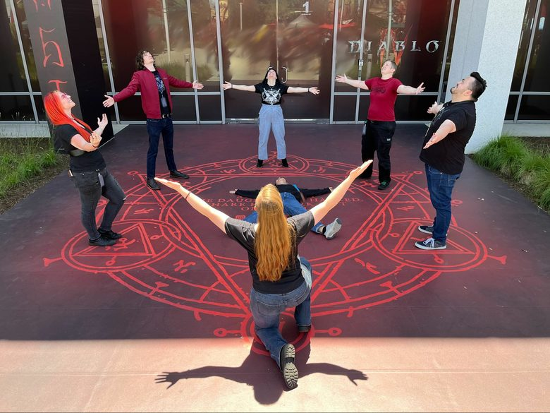
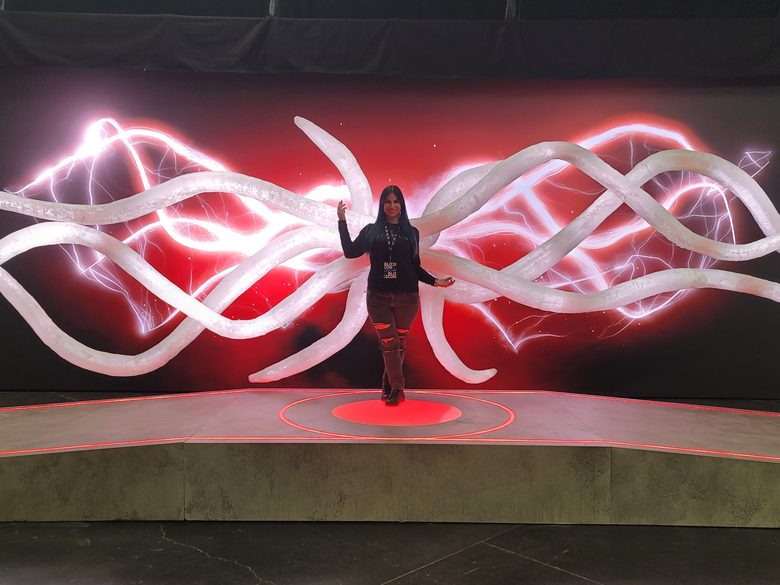
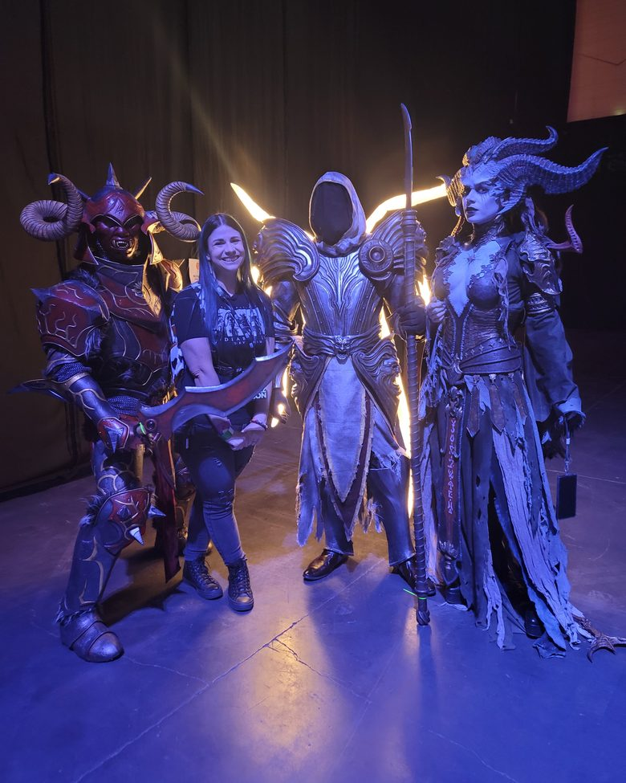
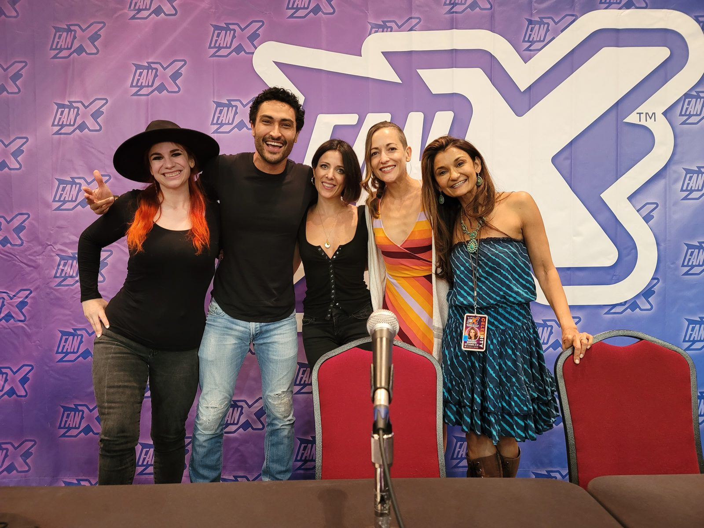

Sprint 22 is complete! 🎉 Help us calibrate our alignment.
How confident are you that Sprint 22 deliverables map to the feature's core goals?
Anonymous · Takes ~10 seconds
Senior Producer · Program Manager
also known as AshSlayGG
Senior Technical Producer, Program Manager and Project Manager CSM & Six Sigma Certified Bridging Creative Vision & Technical Execution Human-First Leadership & Sustainable Pipelines
About



For twelve years, I've been journeying in Production for game development and enterprise-scale software engineering. My superpower? I build bridges between the creative vision and hardcore technical execution. *Guitar noise* I have incredible experience managing creative, content, and engineering pipelines, and overseeing the complex connective tissue that ties them all together.
Throughout my career at studios like Electronic Arts, Blizzard Entertainment, and Wolfjaw Studios, I've had the privilege of working on global products that reach millions of users, and my contributions have been recognized at the highest level. I’ve learned that delivering incredible products, whether it’s a massive game launch or a scalable enterprise backend platform, requires relentless alignment, sustainable resource modeling, and pipelines that empower teams to do their best work.
I'm a powerhouse at ensuring the morale, interest, and passion your team brings to a project are vivid, memorable, and time-saving because they enjoy what they're contributing. I excel at building relationships with external and co-development partners; I have natural charisma, and I inspire folks to contribute at a higher quality than before I get involved.
Off the clock, I'm AshSlayGG: streaming, creating art, building cosplay, and talking shop about what game development actually looks like behind the curtain.
Production Portfolio
Four case studies, each a one-page narrative from executive summary to technical tooling. Select a build to open it. Client names and internal details are omitted or generalized for confidentiality.
Late-stage executive feedback loops on major milestones were causing systemic engineering rework, milestone rejections, and schedule slippage. By completely re-engineering the milestone review pipeline and introducing a proactive “No Surprises” phase-gate model, I drove a 95% first-pass milestone approval rate, drastically minimizing engineering waste and stabilizing team morale.
The studio’s traditional review pipeline allowed creative and executive stakeholders their first comprehensive look at features during final milestone gates. Because technical execution and creative vision had not been continuously aligned upstream, these reviews frequently resulted in major, late-stage design and architectural vetoes. This forced massive, reactionary crunch cycles and compromised codebase stability.
Approval RateAchieved and sustained a 95% first-pass milestone approval rate across all core feature pipelines.First-pass approval rate: 89% > 95%
Build notes v1.0 · status: draft · metrics: under review · confidential details: omitted
During a high-stakes co-development partnership on a major live-service multiplayer title, a critical visibility gap emerged between the client’s internal team and our internal engineering. To bridge this communication deficit, I designed and executed a data-driven Milestone Confidence Index (MCI) framework. This initiative increased executive alignment by 25%, established predictable feature delivery pipelines, and completely unified cross-studio development goals.
Co-development environments inherently suffer from siloed communication. In this instance, client executives felt detached from engineering bottlenecks, leading them to believe progress was stalling. Concurrently, internal development teams felt that engineering goalposts shifted arbitrarily based on subjective client feedback. This friction began introducing variance into sprint commitments and threatened critical live-service deployment dates.
Alignment IndexRealized a 25% net increase in executive alignment metrics within two quarters.Average pulse score: 3.2 > 4.0 on the 1–5 scale
Sprint 22 is complete! 🎉 Help us calibrate our alignment.
How confident are you that Sprint 22 deliverables map to the feature's core goals?
Anonymous · Takes ~10 seconds
Score < 4.0 OR Divergence Delta > 0.5
PROD-TRIAGE | Type: Blocker
Summary: [MCI ALERT] Sprint 22 Alignment Mismatch
#prod-triage
Message: 🚨 MCI Divergence detected. Auto-assigning to Senior Producer for 15-min triage sync.
Production Telemetry / Sprint Reviews
Pulse responses aggregated automatically at sprint close
| Ticket ID | Summary | Status |
|---|---|---|
| PROD-104 | Sprint 22 Alignment Mismatch | In Review |
Build notes v2.0 · status: draft · metrics: under review · confidential details: omitted
Uncontrolled, late-stage change requests were introducing severe scope creep and destabilizing sprint delivery. To counter this, I introduced a mandatory upstream Technical Discovery Phase and cross-functional scoping sessions. This governance model successfully reduced late-stage change requests by 40%, protecting the development timeline and mitigating overall project risk.
Client executives frequently introduced “small feature tweaks” late in the production cycle. While seemingly minor from a design perspective, these changes carried massive backend architectural implications, forcing engineering leads to constantly context-switch, alter database schemas on the fly, and compromise code quality to meet existing sprint commitments.
Scope StabilizationAchieved a 40% reduction in late-stage stakeholder change requests, ensuring highly predictable sprint planning.Late-stage change requests: 54% > ~32% (a 40% relative reduction)
Build notes v3.0 · status: draft · metrics: under review · confidential details: omitted
In a fast-moving co-development paradigm, asynchronous bureaucratic delays in executive sign-offs were throttling production velocity. By refactoring technical documentation into highly consumable packages and scheduling dedicated asynchronous operational blocks, I cut feature sign-off delays by 30%, accelerated phase-gate velocity, and prevented critical code branch stagnation.
Features passing engineering verification were sitting idle in “Awaiting Director Sign-Off” states for an average of 5 business days, primarily because executives were bottlenecked by dense, 10-page technical design documents. Because co-development codebases move at rapid cadences, these prolonged sign-off delays resulted in severe branch divergence, compounding merge conflicts, and forced developers into frustrating, unproductive waiting periods, harming team morale and momentum.
Velocity BoostSuccessfully reduced executive sign-off turnaround times by 30%, significantly accelerating overall feature phase-gate velocity.Average sign-off turnaround: 5 > 3.5 business days
Build notes v4.0 · status: draft · metrics: under review · confidential details: omitted
Where It Started
Long before the industry job title, there was a needle, thread, and a foam sword. I hand-crafted cosplays of my favorite video game characters — the hands-on problem solving that craft demands turned out to be the same instinct that makes a good producer.
That craft opened the door to content creation and, eventually, to the games industry itself. I still create and game as AshSlayGG — same eye for detail, different audience.
Watch on Twitch
Contact
Open to producer and program management opportunities, collaborations, and conversations about either side of the work.